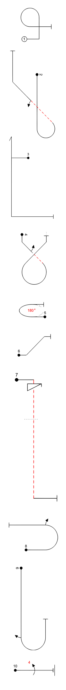

The Aresti catalog
The Aresti Catalog is the Fédération Aéronautique Internationale (FAI) standards document enumerating the aerobatic manoeuvers permitted in aerobatic competition. Designed by Spanish aviator Colonel José Luis Aresti Aguirre (1919–2003),each figure in the catalog is represented by lines, arrows,geometric shapes and numbers representing the precise form of a manoeuver to be flown. The catalog broadly classifies manoeuvers into numbered families. Families 1 through 8 depict basic figures, such as turns, loops and vertical lines; family 9 depicts rotational elements that can be added to basic figures to increase difficulty, change the direction of flight or invert the g-loading of the aircraft.
The manoeuvers
